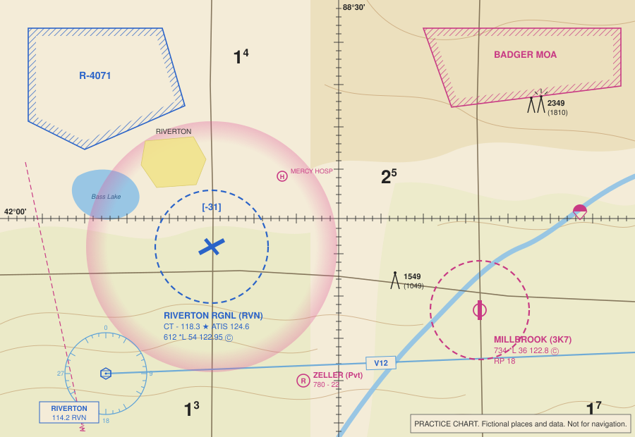

Study module 2 of 5
Airspace and chart reading
You will fly at 400 ft or lower, but the test expects you to read the same VFR sectional charts manned pilots use, because that is where controlled airspace, airports, obstacles, and special use areas are drawn. This is the module to spend extra time on.
Airspace classes and what they mean for you
Controlled airspace (Classes A through E) is where ATC provides services; uncontrolled airspace (Class G) is everything else. For a Part 107 pilot the only question that matters is whether 107.41 requires authorization: it does for Class B, C, D, and Class E surface areas, and it does not for Class G or for Class E that begins above the ground.
| Class | Where | On the chart | Typical vertical limits | Part 107 |
|---|---|---|---|---|
| A | Everywhere above 18,000 ft MSL | Not depicted | 18,000 ft MSL to FL600 | Not reachable |
| B | The busiest airports (Chicago O'Hare, Atlanta, LAX) | Solid blue lines, layered like an upside-down wedding cake | Surface to about 10,000 ft MSL; outer shelves have higher floors | Authorization required |
| C | Busy airports with radar approach control | Solid magenta lines; 5 nm core, 10 nm shelf | Surface to about 4,000 ft above the airport | Authorization required |
| D | Airports with a control tower | Dashed blue line, ceiling in brackets such as [-31] | Surface to about 2,500 ft above the airport | Authorization required |
| E surface area | Some airports with instrument approaches | Dashed magenta line | From the surface | Authorization required |
| E at 700 ft | Around most airports with instrument approaches | Magenta vignette (shaded band), 700 ft floor on the soft side | 700 ft AGL up to 18,000 ft | No authorization below 700 ft |
| E at 1,200 ft | Most of the rest of the country | No marking, or a blue vignette where the floor changes | 1,200 ft AGL up to 18,000 ft | No authorization below 1,200 ft |
| G | Below the Class E floor, away from busy airports | Not depicted; it is the absence of other markings | Surface up to the Class E floor | No authorization, but 107.43 still applies near airports |
Blue is for towered airports and the airspace that needs a tower (B, D). Magenta is for everything else (C is the exception: magenta but towered, because it is defined by radar service). Dashed lines start at the surface. Vignettes start in the air.
When a part-time tower closes (a star after the CT frequency), the Class D typically becomes Class E surface area or Class G. The Chart Supplement says which. Authorization requirements follow whatever airspace is active at the time of your flight.
The practice chart
This excerpt is fictional, but every symbol on it is drawn the way the real chart draws it. Tap to enlarge. Walk through it with the notes below, then expect to see it again in the practice exam.

- Riverton Regional (RVN) is drawn in blue with a runway layout, so it has a control tower and hard-surface runways. The dashed blue circle is Class D, and [-31] says the Class D ceiling is 3,100 ft MSL. Flying anywhere inside that circle, at any altitude, needs ATC authorization.
- The magenta vignette around Riverton marks Class E with a 700 ft AGL floor on the shaded (inner) side. Below 700 ft you are in Class G, so a 400 ft flight at the farm southeast of the Class D ring needs no authorization.
- Millbrook (3K7) is magenta: no tower. The dashed magenta circle is a Class E surface area, which does require authorization.
- R-4071 has a blue hatched border: a restricted area. Badger MOA has a magenta hatched border: a military operations area.
- The obstacle southeast of the 88°30' line is 1,549 ft MSL and 1,049 ft AGL, so the ground there is about 500 ft MSL. The lighted obstacle group in the northeast has rays around the symbol and tops out at 2,349 ft MSL.
- The large numbers with a small superscript are maximum elevation figures: the 2 with a small 5 means 2,500 ft MSL for that quadrangle.
- The compass rose in the lower left is a VOR (Riverton, 114.2, RVN) and the light blue line leaving it is Victor airway V12, a Class E airway with a floor of 1,200 ft AGL.
- The circle with an R is a private airport; the circle with an H is a heliport; the small parachute marks a parachute jumping area.
- The dashed magenta line in the lower left labeled 3°W is an isogonic line: magnetic variation here is 3 degrees west.
- The heavy black lines are latitude 42°00'N and longitude 88°30'W, with a tick every minute.
Airport data blocks
Next to every public airport is a block of text. Riverton's reads:
RIVERTON RGNL (RVN) CT - 118.3 ★ ATIS 124.6 612 *L 54 122.95 ©
- Name and identifier. Three-letter identifiers belong to larger airports; smaller fields have alphanumeric ones like 3K7.
- CT - 118.3 ★. Control tower frequency. The star means the tower is part time.
- ATIS 124.6. The recorded airport information broadcast.
- 612. Field elevation in feet MSL. Add 400 to get your maximum MSL altitude over the field.
- *L. Runway lighting exists; the star means there are limitations (pilot-controlled, part-time, or on request). See the Chart Supplement.
- 54. Longest runway in hundreds of feet: 5,400 ft.
- 122.95 ©. The circled C marks the common traffic advisory frequency (CTAF), where pilots self-announce. At a towered field the CTAF is usually the tower frequency; here UNICOM 122.95 is used when the tower is closed.
Millbrook's block adds RP 18: right-hand traffic pattern for runway 18. Standard patterns use left turns, so RP tells you which side of the runway low-flying traffic will be on. A NO SVFR note means special VFR is not available; a (Pvt) label means private.
Airport symbols: a plain circle is a field with runways shorter than 1,500 ft or soft surfaces; a circle with a runway layout inside means hard-surfaced runways of 1,500 to 8,069 ft; runway layouts drawn without a circle mean at least one runway longer than 8,069 ft. Small tick marks around a circle mean fuel and services are available during normal working hours.
Obstacles, terrain, and maximum elevation figures
Obstacle symbols come with two numbers: the top in feet MSL in bold, and the height AGL in parentheses. Charts show obstacles 200 ft AGL and taller. Obstacles over 1,000 ft AGL use a taller symbol. A symbol with small rays is lighted. Two symbols close together with one set of numbers is a group obstacle. Remember that guyed towers have wires extending far out from the base, often invisible against the sky.
Maximum elevation figures appear in every 30 minute quadrangle as a large number (thousands of feet) with a small superscript (hundreds). An MEF of 17 is 1,700 ft MSL: the highest terrain or obstacle in the box, rounded up with a margin. It tells you the general level of the land, which you need to convert a METAR cloud base or a chart altitude into something you can compare with 400 ft AGL.
Terrain is shown with contour lines and color tints that get browner with elevation. Spot elevations (a small dot with a number) mark the highest point in an area.
A favorite question: "What is the maximum altitude you may fly near obstacle X?" Subtract the AGL number from the MSL number to get the ground elevation, add 400. If the question says you will be within 400 ft of the obstacle, add 400 to the obstacle's MSL top instead.
Special use airspace
| Type | Label | Border | What it means for you |
|---|---|---|---|
| Prohibited area | P-56 | Blue hatched | Flight prohibited for national security. Permission required and rarely granted. |
| Restricted area | R-4071 | Blue hatched | Invisible hazards such as gunnery or missiles. Permission from the controlling agency required when active. Hours and agency are in the chart margin tabulation and the Chart Supplement. |
| Warning area | W-237 | Blue hatched | Same hazards as restricted, but over water from 3 nm offshore where the U.S. lacks sole jurisdiction. |
| Military operations area | BADGER MOA | Magenta hatched | Military training; separates military from IFR traffic. Not prohibited to you, but fast low traffic. Check activity and use extreme caution. |
| Alert area | A-211 | Magenta hatched | High volume of pilot training or unusual activity. No permission needed; everyone is responsible for collision avoidance. |
| Controlled firing area | Not charted | Not charted | Activity stops when an aircraft approaches, so it is not depicted. |
| National security area | NSA | Broken magenta line | Voluntary avoidance; can become mandatory by NOTAM. |
| Military training route | IR1234, VR1234 | Gray lines with arrows | High-speed military traffic. Four-digit numbers: segments at or below 1,500 ft AGL. Three digits: some segments above 1,500 ft. |
TFRs and NOTAMs
Temporary flight restrictions are issued by NOTAM for things that cannot be printed on a chart: presidential movements, wildfires, disasters, space launches, air shows, and sporting events. The stadium TFR is standing: 3 nautical miles and 3,000 ft AGL around stadiums seating 30,000 or more, from one hour before to one hour after MLB, NFL, NCAA Division I football, and major motor-sports events. Violating a TFR is a serious enforcement matter.
Check before every flight: tfr.faa.gov, the FAA NOTAM search, a Flight Service briefing at 1-800-WX-BRIEF, or an FAA-approved airspace app. The chart tells you where the permanent airspace is; NOTAMs tell you what has changed today.
LAANC and UAS Facility Maps
LAANC (Low Altitude Authorization and Notification Capability) is how most Part 107 pilots get the authorization 107.41 requires. Through an FAA-approved service supplier's app you draw your operating area, enter a time window and altitude, and receive an automatic approval in near real time, provided the altitude is at or below the pre-approved ceiling in the UAS Facility Map grid for that spot.
Facility map grids show numbers such as 0, 50, 100, 200, 300, or 400: the maximum altitude ATC will auto-approve, in feet AGL. A 0 grid (typically on the extended runway centerlines) means no automatic approval; you may apply through FAADroneZone for further coordination, which is reviewed by hand. LAANC can also submit requests above the grid ceiling, up to 400 ft, for manual review. Authorizations are limited to the exact area, altitude, and time approved, and ATC can modify or cancel them at any time.
Other features worth knowing
- Latitude and longitude. Lines every 30 minutes, ticks every minute. Latitude is north-south (horizontal lines), longitude is east-west (vertical lines). In the continental U.S. longitudes are west, so numbers increase to the left.
- VORs and airways. A VOR is a ground navigation station drawn with a compass rose oriented to magnetic north. Victor airways (V-numbers, light blue) connect them at 1,200 ft AGL and above.
- Isogonic lines. Dashed magenta lines showing magnetic variation. Runway numbers, ATC headings, and VOR radials are magnetic; the chart grid is true. Winds in written reports are true; winds from a tower or ATIS are magnetic.
- Mode C veil. A thin blue ring 30 nm around Class B airports. Manned aircraft need transponders inside it. It does not by itself require anything from a Part 107 pilot.
- Parks and refuges. National parks, wildlife refuges, and wilderness areas are outlined with a blue line and dots. Pilots are requested to stay 2,000 ft above them; drone takeoff and landing on National Park Service land is prohibited by the Park Service.
- Chart currency. Sectionals are revised every 56 days. Digital charts are free from the FAA.
- Chart Supplement. The companion book (formerly the Airport/Facility Directory) with airport hours, frequencies, runway details, parachute activity, and special use airspace contacts.
Test tips for airspace questions
- The real test uses figures from the Airman Knowledge Testing Supplement. Download it (free, on the resources page) and practice finding airports by latitude and longitude, reading data blocks, and identifying airspace by line style and color.
- Ask yourself three questions about any point on a chart: What is the lowest airspace here? Does it start at the surface? Do I need authorization?
- Bracketed numbers are Class D ceilings in MSL. Fractions on Class B and C shelves are ceiling over floor in hundreds of feet MSL. SFC means surface.
- Do not confuse a MOA (caution) with a restricted area (permission) with a prohibited area (no).